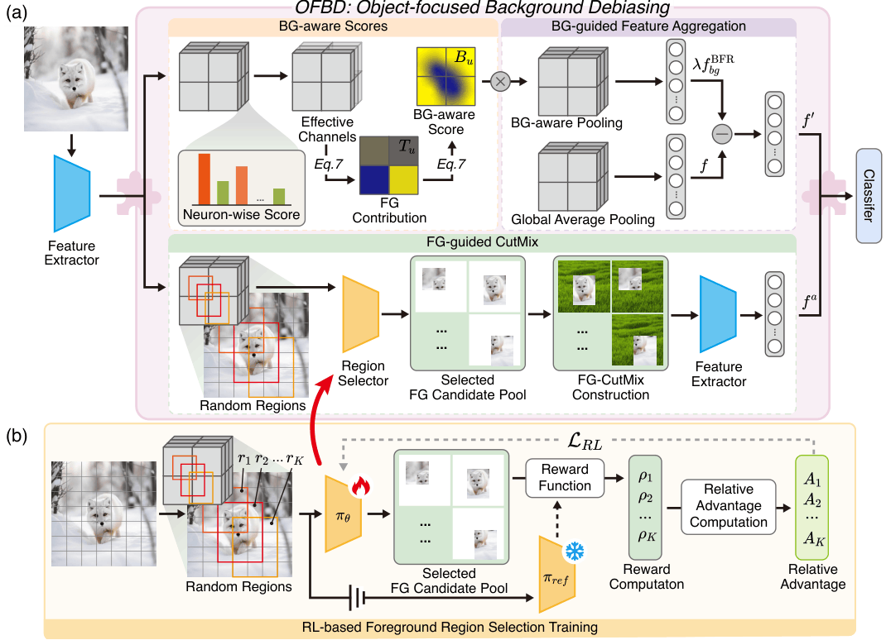
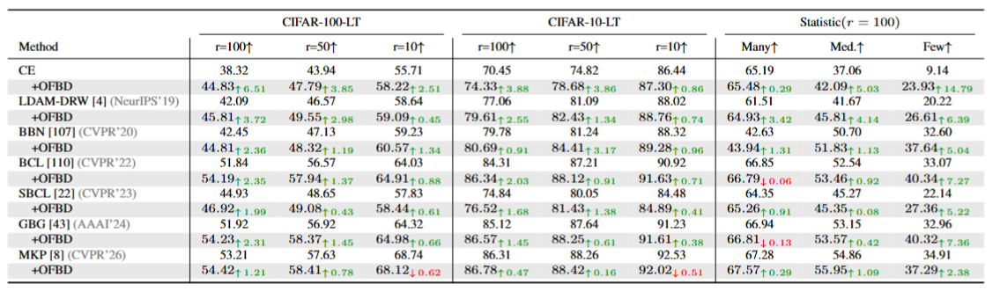
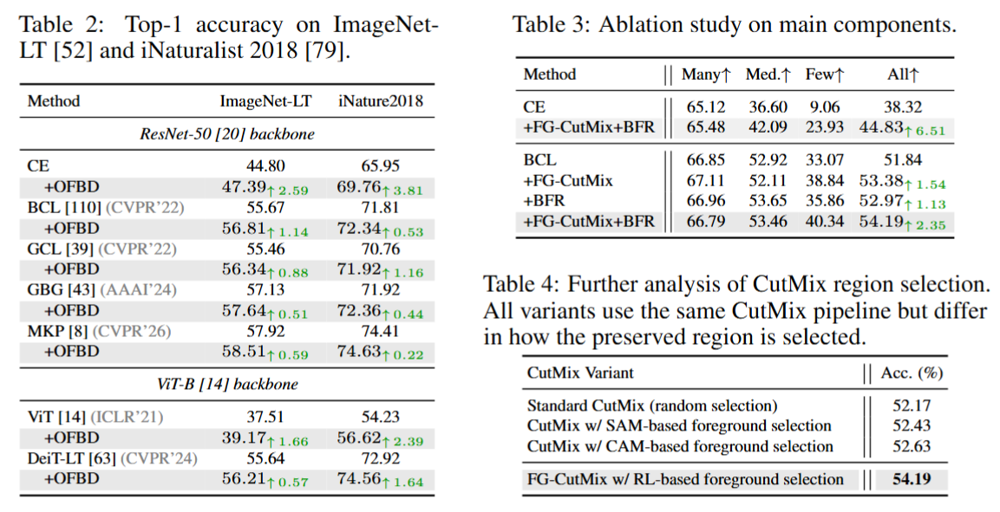
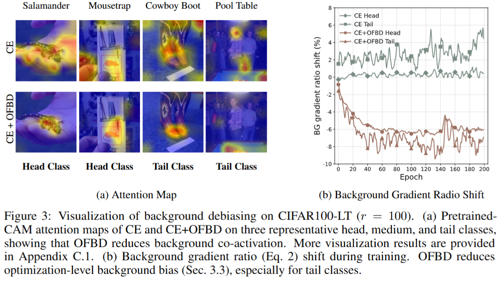
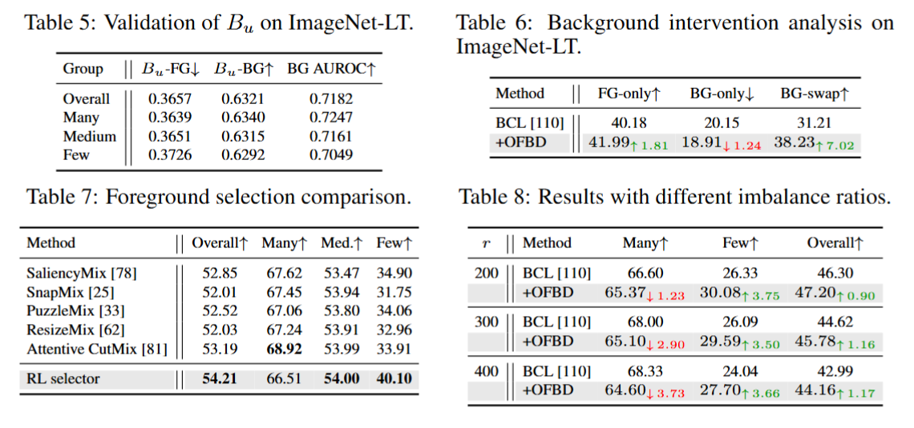

OFBD: Object-Focused Background Debiasing for Long-Tailed Learning
Abstract
Balancing performance trade-offs on long-tailed data distributions remains a long-standing challenge in visual recognition. Existing methods mainly improve tail classes through re-balancing, representation learning, or data augmentation, but the underlying cause of tail degradation remains insufficiently explored.
In this paper, we reveal that standard long-tailed training induces background-biased representation and optimization. Tail classes suffer larger background distribution shifts and become increasingly driven by background gradients, causing models to rely on irrelevant contextual cues rather than discriminative foreground information.
To address this issue, we propose Object-Focused Background Debiasing (OFBD), a framework that mitigates background bias from both distribution and optimization perspectives. Specifically, Foreground-guided CutMix preserves target-related foregrounds while diversifying backgrounds, and Background-guided Feature Rectification suppresses background-biased features without learnable parameters.
Extensive experiments demonstrate that OFBD improves overall accuracy, achieves significant tail-class gains, and serves as a plug-in framework for mainstream long-tailed recognition methods without external data or pretrained recognition models.
Method

Our proposed Object-Focused Background Debiasing (OFBD) framework tackles background bias from two complementary perspectives.
Foreground-guided CutMix (FG-CutMix) reduces distribution-level background bias by preserving target-related foreground regions while replacing complementary backgrounds.
Background-guided Feature Rectification (BFR) addresses optimization-level background bias by estimating background-aware scores from feature statistics and suppressing background-biased feature locations without introducing additional parameters.
Together, FG-CutMix and BFR encourage models to focus on semantic foreground information rather than spurious contextual cues, providing an efficient plug-in solution for long-tailed recognition.
Experimental Results

Motivation Analysis. OFBD reveals that tail classes suffer from stronger background bias in both representation and optimization.

Main Results. OFBD consistently improves long-tailed recognition performance across CIFAR-LT, ImageNet-LT, and iNaturalist benchmarks.

Ablation Study. Both FG-CutMix and BFR contribute complementary improvements, especially benefiting tail classes.

Further Analysis. OFBD effectively reduces background reliance and improves foreground-focused representation learning.
BibTeX
@inproceedings{chen2026ofbd,
title={OFBD: Object-Focused Background Debiasing for Long-Tailed Learning},
author={Chen, Shenghan and Liu, Yiming and Deng, Zhipeng and Wang, Haolin and Zhou, Jiale and Wu, Zhijian and Lu, Xiankai and Ou, Yafei and Zheng, Yefeng},
booktitle={Advances in Neural Information Processing Systems},
year={2026}
}